L’objectif de cette séance est l’étude du mouvement d’un mobile autoporteur en rotation autour d’un axe fixe à l’aide d’un fil inextensible sur une table à coussins d’air.
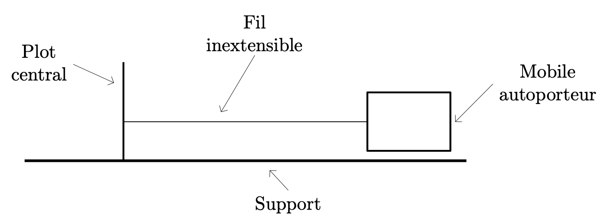
Premier mouvement
Étude de l’enregistrement
Les positions successives du centre d’inertie du mobile sont enregistrées à intervalles de temps réguliers $\Delta t = \pu{40 ms}$. On obtient l’enregistrement suivant :
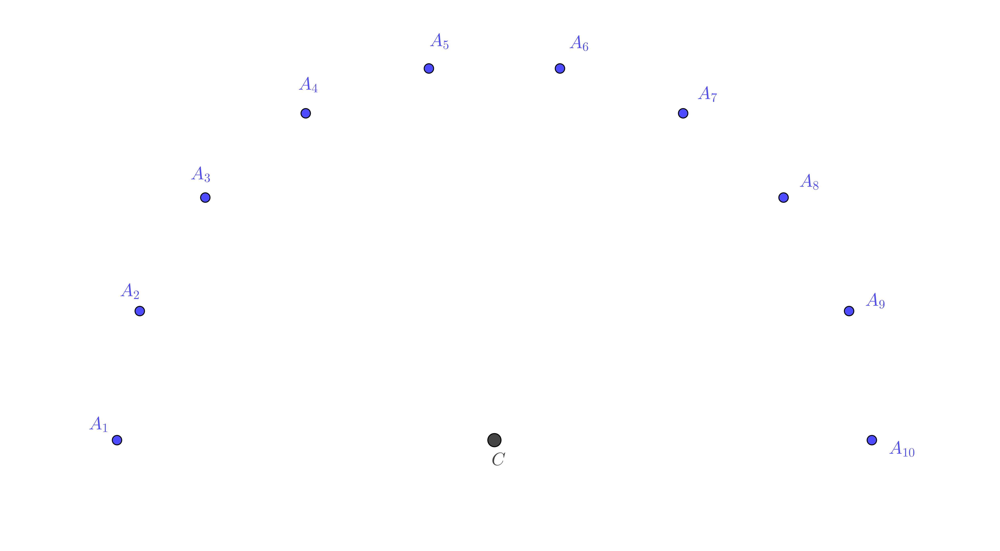
Les différents points $A_i$ sont les traces du centre d’inertie du $G$ du mobile. L’échelle des longueurs est la suivante : $ \pu{1 cm} \leftrightarrow \pu{1 cm}$.
- Quelle est la nature de la trajectoire de $G$ ?
Réponse
- La trajectoire est un cercle.
- Définir le vecteur vitesse de $G$, $\vec{v}(A_2)$ au point $A_2$. En déduire son expression approchée.
Réponse
- Définition : $ \vec{v}(A_2) = \lim\limits_{\Delta t \to 0} \dfrac{\overrightarrow{OA_2}(t_2 + \Delta t) - \overrightarrow{OA_2}(t_2)}{\Delta t}$.
- Approximation : $ \vec{v}(A_2) \approx \dfrac{\overrightarrow{OA_2}(t_2 + \Delta t) - \overrightarrow{OA_2}(t_2)}{\Delta t} = \dfrac{\overrightarrow{OA_{3}} - \overrightarrow{OA_2}}{\Delta t} = \dfrac{\overrightarrow{A_2A_3}}{\Delta t} $ puisqu’on ne peut pas faire tendre expérimentalement $\Delta t$ vers 0.
Ici $\Delta t$ représente la durée entre deux positions successives. - Meilleure approximation : $ \vec{v}(A_2) \approx \dfrac{\overrightarrow{A_{1}A_{3}}}{2\, \Delta t} $.
- Déterminer la valeur de la vitesse $v(A_2)$.
Réponse
- Puisque $ \vec{v}(A_2) \approx \dfrac{\overrightarrow{A_{1}A_{3}}}{2\, \Delta t} $, on en déduit que $\vec{v}(A_2)$ et $\overrightarrow{A_{1}A_{3}}$ sont deux vecteurs colinéaires et de même sens. Donc $v(A_2) \approx \dfrac{A_{1}A_{3}}{2\, \Delta t} $.
Il faut mesurer la longueur du segment $A_{1}A_{3}$ (ne pas oublier d’utiliser l’échelle) et diviser le résultat par $2\, \Delta t$. - $A_{1}A_{3} = \pu{5,1 cm}$ donc $v(A_2) \approx \dfrac{\pu{5,1 cm}}{2 \times \pu{40e-3 s}} = \pu{6,4e-1 m.s-1}$.
Remarque : Ne pas oublier d’utiliser l’échelle des longueurs (ici c’est $ \pu{1 cm} \leftrightarrow \pu{1 cm}$).
- Représenter $\vec{v}(A_2)$ sur la feuille. Indiquer l’échelle utilisée.
Réponse
- Le vecteur $\vec{v}(A_2)$ possède une direction parallèle à celle du vecteur $\overrightarrow{A_{1}A_{3}}$. Cette direction passe bien sûr par le point $A_2$.
- Le vecteur $\vec{v}(A_2)$ possède le même sens que le vecteur $\overrightarrow{A_{1}A_{3}}$.
- Le vecteur $\vec{v}(A_2)$ a pour valeur $v(A_2) = \pu{6,4e-1 m.s-1}$.
On le représente donc par une flèche parallèle et de même sens que le vecteur $\overrightarrow{A_{1}A_{3}}$ partant de $A_2$ et ayant pour longueur $\pu{6,4 cm}$ si on prend pour échelle $ \pu{1 cm} \leftrightarrow \pu{1e-1 m.s-1}$.
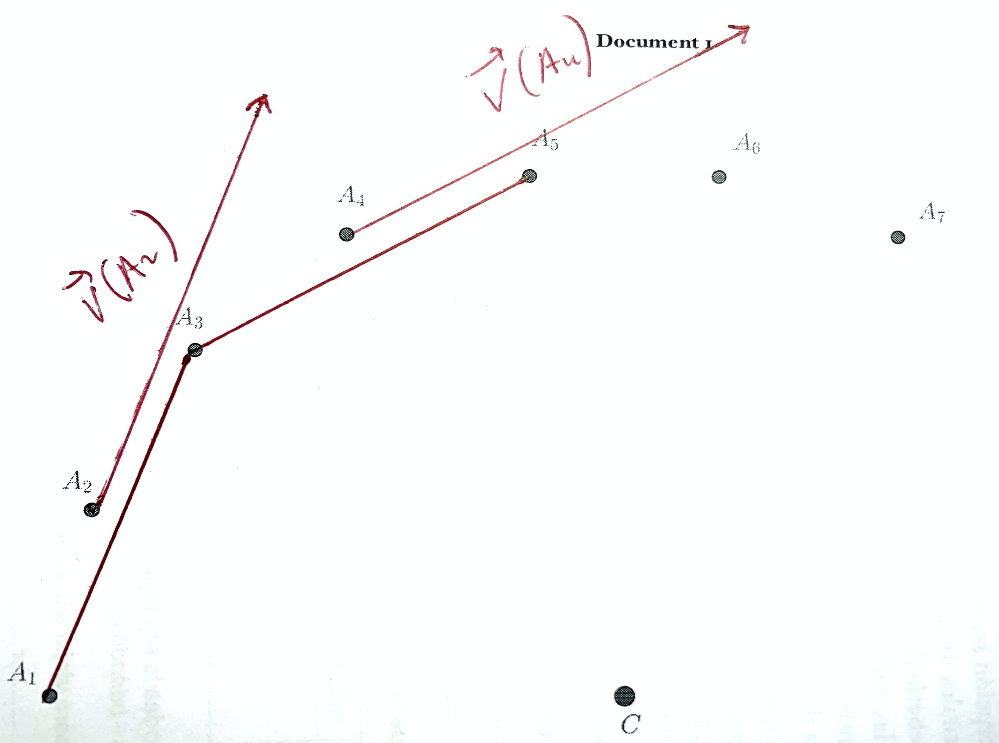
- Mêmes questions pour le point $A_4$.
Réponse
Raisonnement identique.
- Le vecteur $\vec{v}(A_4)$ possède une direction parallèle à celle du vecteur $\overrightarrow{A_{3}A_{5}}$. Cette direction passe bien sûr par le point $A_4$.
- Le vecteur $\vec{v}(A_4)$ possède le même sens que le vecteur $\overrightarrow{A_{3}A_{5}}$.
- Le vecteur $\vec{v}(A_4)$ a pour valeur $v(A_4) \approx \dfrac{\pu{5,1 cm}}{2 \times \pu{40e-3 s}} = \pu{6,4e-1 m.s-1}$.
On le représente donc par une flèche parallèle et de même sens que le vecteur $\overrightarrow{A_{3}A_{5}}$ partant de $A_4$ et ayant pour longueur $\pu{6,4 cm}$ (on utilise toujours la même échelle des vitesses).
- Au point $A_3$, construire $\Delta \vec{v}(A_3) = \vec{v}(A_4) - \vec{v}(A_2)$.
Réponse
- Puisque les vecteurs $\vec{v}(A_4)$ et $\vec{v}(A_2)$ on ne peut accéder aux caractéristiques de $\Delta \vec{v}(A_3)$ qu’à partir d’une construction graphique (voir schéma).
- Ne pas oublier de transporter le vecteur $\Delta \vec{v}(A_3)$ du point $A_4$ au point $A_3$.
Remarque : on doit constater ici (ça ne se voit pas sur mon graphique construit sans équerre) que la direction du vecteur $\Delta \vec{v}(A_3)$ passe par le point $C$.
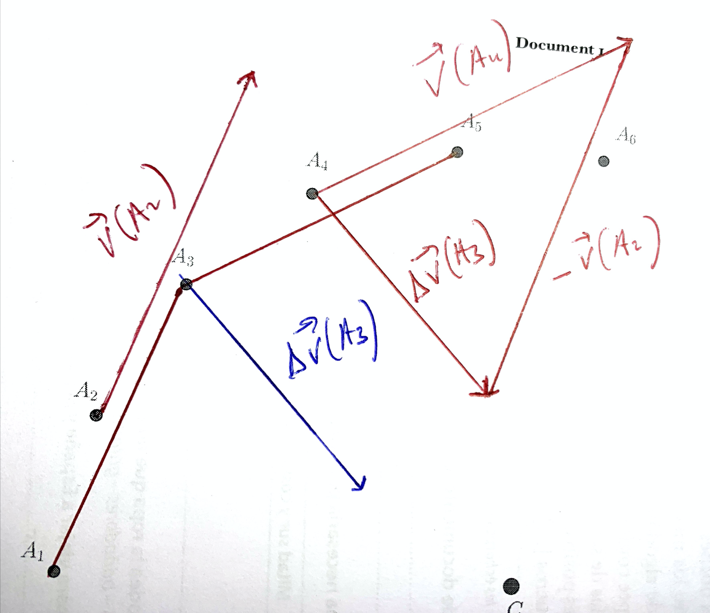
- Déterminer $\Vert \Delta \vec{v}(A_3) \Vert$ graphiquement.
Réponse
- Graphiquement, on mesure la longueur de la flèche représentant le vecteur $\Delta \vec{v}(A_3)$ : $\pu{4,6 cm}$. Grâce à l’échelle on en déduit que $\Delta v(A_3) = \pu{4,6 cm} \times \pu{1e-1 m.s-1} = \pu{4,6e-1 m.s-1}$.
- Au point $A_8$, construire $\Delta \vec{v}(A_8) = \vec{v}(A_9) - \vec{v}(A_7)$ et déterminer $\Vert \Delta \vec{v}(A_8) \Vert$ graphiquement.
Réponse
- Pour construire le vecteur $\Delta \vec{v}(A_8)$, il faut dans un premier temps construire les vecteurs $\vec{v}(A_7)$ et $\vec{v}(A_9)$ en utilisant la même procédure qu’aux questions 2. et 3.
- Les vecteurs $\vec{v}(A_7)$ et $\vec{v}(A_9)$ n’étant pas colinéaires, on ne peut accéder aux caractéristiques de $\Delta \vec{v}(A_8)$ qu’à partir d’une construction graphique, comme déjà souligné à la question 6.
- Ici aussi, le vecteur $\Delta \vec{v}(A_8)$ possède une direction qui passe par le point $C$.
- Graphiquement, on mesure sa valeur $\Delta v(A_8)$, elle vaut $\Delta v(A_8) = \pu{4,6 cm} \times \pu{1e-1 m.s-1} = \pu{4,6e-1 m.s-1}$.
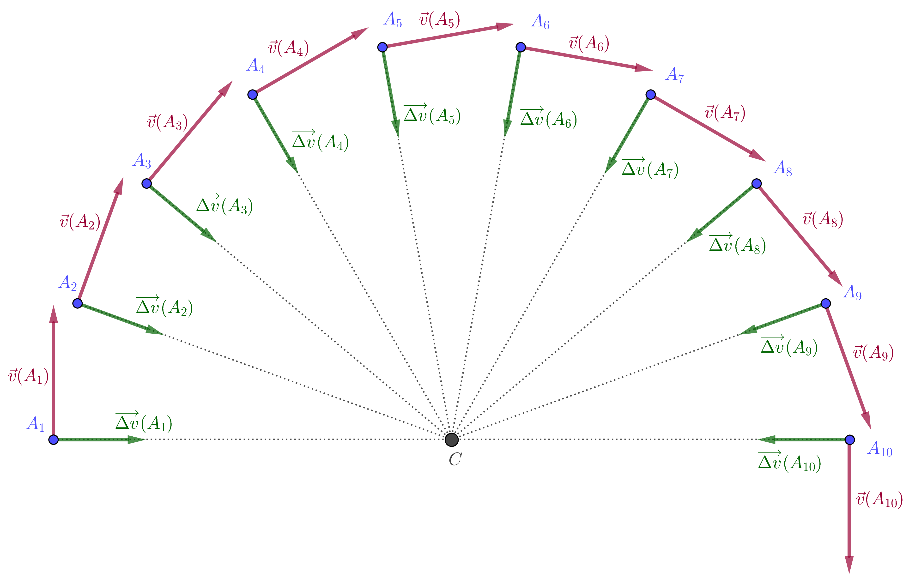
- Qualifier le mouvement.
Réponse
Le mouvement est circulaire et uniforme, puisque la valeur de la vitesse est constante.
- Faire le bilan des forces qui agissent sur le mobile.
Réponse
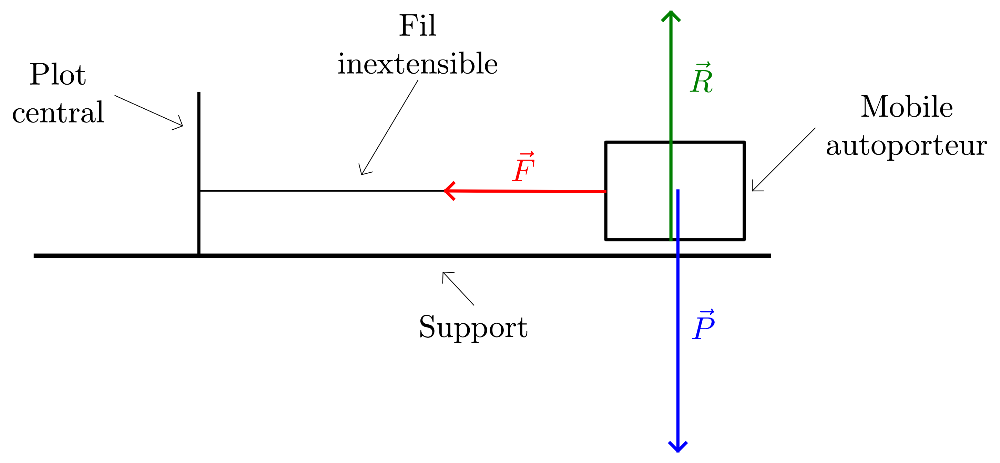
- Système $= \{\text{Mobile autoporteur}\}$
- Interactions :
- Système – Terre , modélisée par le poids $\vec{P}$ ;
- Sytème – Support , modélisée par la réaction $\vec{R}$ (la direction de cette force est perpendiculaire au support car il n’y a pas de frottement) ;
- Système – Fil , modélisée par la force $\vec{F}$ dont la direction est confondue avec celle du fil.
- Référentiel $= \{\text{terrestre considéré galiléen}\}$
- Schématisation (toutes les forces sont ramenées au centre d’inertie du système) 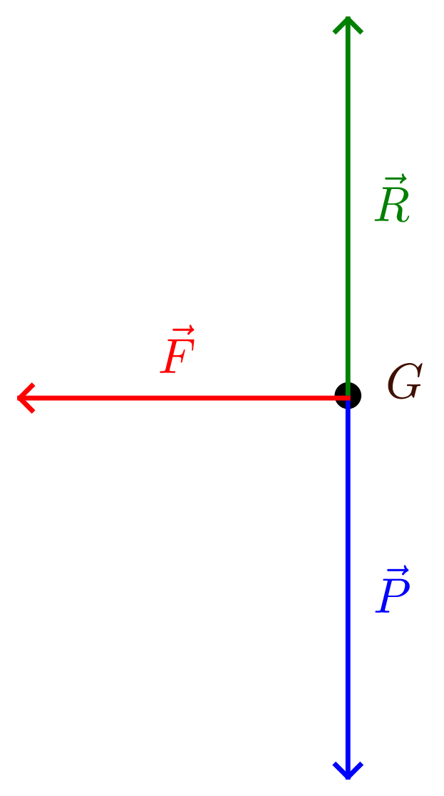
On constate que $\vec{R} + \vec{P} + \vec{F} = \vec{F}$. La résultante (ou somme) des forces est égale au vecteur $\vec{F}$ dont la direction se confond avec le rayon de la trajectoire.
- Tracer, au point $A_3$, la résultante des forces qui agissent sur le mobile et comparer sa direction à celle du vecteur $\Delta \vec{v}(A_3)$.
Réponse
Le vecteur $\Delta \vec{v}(A_3)$ possède la même direction et le même sens que la résultante (ou somme) $\vec{F}$ des forces qui s’appliquent sur le système. $$\Delta \vec{v}(A_3) = k \vec{F}$$
- Tracer, au point $A_8$, la résultante des forces qui agissent sur le mobile et comparer sa direction à celle du vecteur $\Delta \vec{v}(A_8)$.
Réponse
Le vecteur $\Delta \vec{v}(A_8)$ possède la même direction et le même sens que la résultante (ou somme) $\vec{F}$ des forces qui s’appliquent sur le système. $$\Delta \vec{v}(A_8) = k \vec{F}$$
Accélération du mobile
De même que l’on s’intéresse, dans un référentiel donné, au taux de variation instantanée du vecteur position du centre d’inertie d’un système à la date $t_i$ en définissant la vitesse $\overrightarrow{v_G} (t_i)$ par :
$$ \overrightarrow{v_G} (t_i) = \lim_{\Delta t \to 0} \left( \dfrac{\Delta \overrightarrow{OG}}{\Delta t} \right)_{t_i} = \left( \dfrac{\mathrm{d} \overrightarrow{OG}}{\mathrm{dt}} \right)_{t_i} $$
— On étudie ainsi comment évolue cette position au cours du temps —, on peut définir le taux de variation instantanée du vecteur vitesse $\overrightarrow{v_G}$ ou vecteur accélération $\overrightarrow{a_G} (t_i)$ du centre d’inertie du système mécanique à la date $t_i$ dans le même référentiel, par :
$$ \overrightarrow{a_G} (t_i) = \lim_{\Delta t \to 0} \left( \dfrac{\Delta \overrightarrow{v_G}}{\Delta t} \right)_{t_i} = \left( \dfrac{\mathrm{d} \overrightarrow{v_G}}{\mathrm{dt}} \right)_{t_i} $$
On étudie alors comment varie le vecteur vitesse $\overrightarrow{v_G}$ à la date $t_i$.
Unité.
On peut déterminer l’unité de la valeur du vecteur accélération en cherchant sa dimension :
$$ [a_G] = \dfrac{[v_G]}{T} = \dfrac{L / T}{T} = L \times T^{- 2} $$
Dans le système international d’unités, la valeur du vecteur accélération s’exprime donc en mètre par seconde au carré ($\pu{m.s-2}$).
- Définir le vecteur accélération $\vec{a}(A_3)$ au point $A_3$. En déduire l’expression approchée de ce vecteur.
Réponse
- Définition : $\vec{a}(A_3) = \lim\limits_{\Delta t \to 0} \dfrac{\vec{v}(t_3 + \Delta t) - \vec{v}(t_3)}{\Delta t}$.
- Approximation : $\vec{a}(A_3) \approx \dfrac{\vec{v}(t_3 + \Delta t) - \vec{v}(t_3)}{\Delta t} = \dfrac{\vec{v}(A_4) - \vec{v}(A_3)}{\Delta t}$ puisqu’on ne peut pas faire tendre expérimentalement $\Delta t$ vers 0.
Ici $\Delta t$ représente la durée entre deux positions successives. - Meilleure approximation : $\vec{a}(A_3) \approx \dfrac{\vec{v}(A_4) - \vec{v}(A_2)}{2\, \Delta t} = \dfrac{\Delta \vec{v}(A_3)}{2\, \Delta t}$.
- Comparer les directions des vecteurs $\Delta \vec{v}(A_3)$ et $\vec{a} (A_3)$ au point $A_3$.
Réponse
- Les vecteurs $\Delta \vec{v}(A_3)$ et $\vec{a} (A_3)$ sont colinéaires, de même sens puisque le coefficient de colinéarité est positif. Ces vecteurs possèdent donc des directions parallèles.
- Déterminer la valeur $a(A_3)$ du vecteur vitesse au point $A_3$ et tracer ce vecteur. Ne pas oublier de préciser l’échelle.
Réponse
- Puisque $\Delta \vec{v}(A_3)$ et $\vec{a} (A_3)$ sont colinéaires et de même sens, $a (A_3) = \dfrac{\Delta v(A_3)}{2\, \Delta t}$.
$a (A_3) = \dfrac{\pu{4,6e-1 m.s-1}}{2 \times \pu{40e-3 s}} = \pu{5,8 m.s-2}$. - Échelle du tracé des accélération : $ \pu{1 cm} \leftrightarrow \pu{1 m.s-2}$.

- Mêmes questions pour le point $A_8$.
Réponse
- $\vec{a}(A_8) \approx \dfrac{\vec{v}(A_9) - \vec{v}(A_7)}{2\, \Delta t} = \dfrac{\Delta \vec{v}(A_8)}{2\, \Delta t}$.
- Puisque $\Delta \vec{v}(A_9)$ et $\vec{a} (A_8)$ sont colinéaires et de même sens, $a (A_8) = \dfrac{\Delta v(A_8)}{2\, \Delta t}$.
$a (A_8) = \dfrac{\pu{4,6e-1 m.s-1}}{2 \times \pu{40e-3 s}} = \pu{5,8 m.s-2}$. - Pour la représentation, on utilise l’échelle définie à la question précédente.
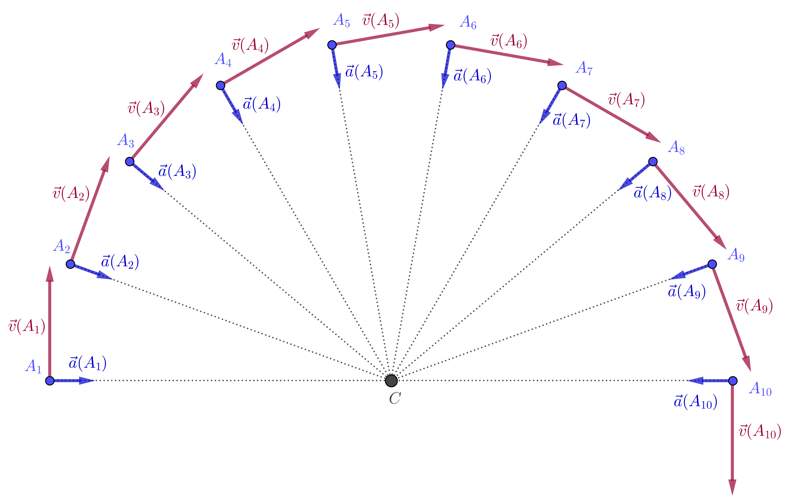
- Quelle particularité le vecteur accélération présente-t-il lorsque le mouvement du système est circulaire et uniforme ?
Réponse
- Le vecteur accélération est toujours centripète (dirigé vers l’intérieur de la courbure) et possède une direction qui passe par le centre de courbure, lorsque le mouvement est circulaire et uniforme.
Puisque l’accélération est le taux de variation instantanée du vecteur vitesse, quelle caractéristique du vecteur vitesse est modifiée lorsque l’accélération est centripète ?
- On constate à l’issue de cette étude que la seule caractéristiques qui varie pour le vecteur vitesse est sa direction.
Second mouvement
On modifie le montage et on enregistre à nouveau le mouvement du mobile.
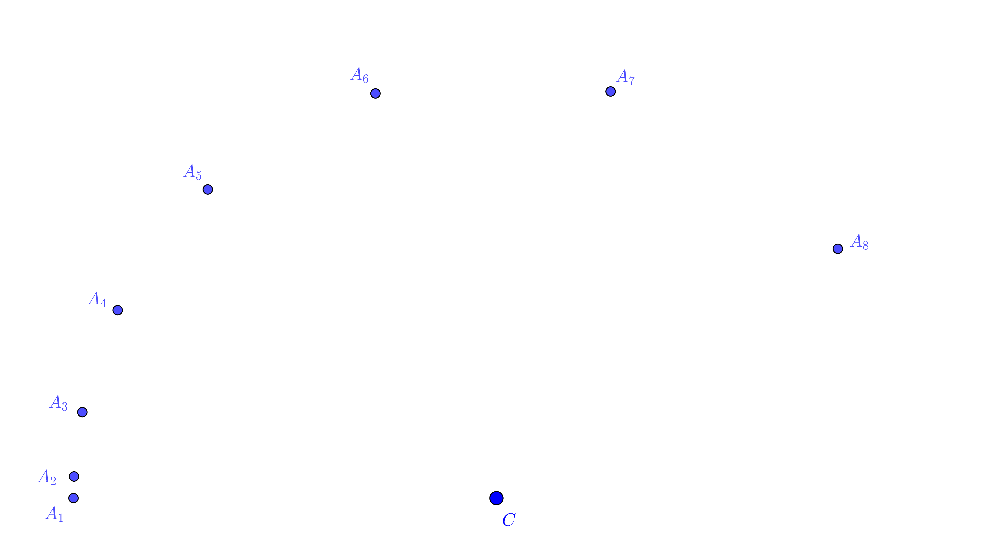
- Déterminer et tracer les accélérations $\vec{a}(A_4)$ et $\vec{a}(A_7)$ sur cet enregistrement.
Réponse
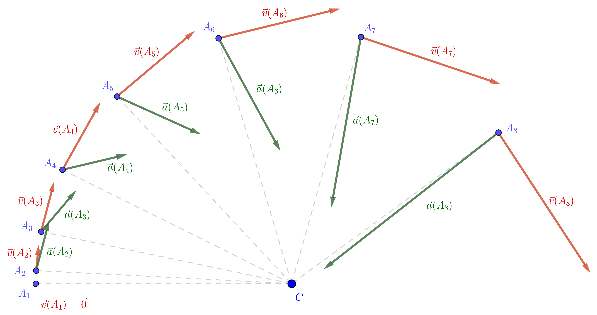
- On constate que les différentes accélérations ne sont plus centripètes, elles possèdent une composante radiale (même direction que les rayons de la trajectoire) et des composantes tangentielles (même direction que les vecteurs vitesses)
- Décomposer les différents vecteurs accélérations sur les deux directions suivantes :
- la direction tangentielle au point considéré (direction du vecteur vitesse) ;
- la direction normale au point considéré (direction confondue avec le rayon de la trajectoire).
Réponse
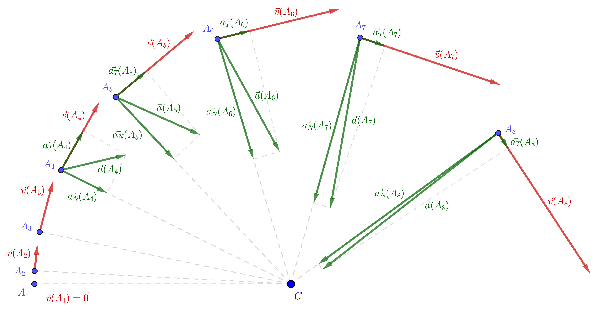
Repère de Frenet
On appelle repère de Frenet le repère mobile associé au point $G$, centre d’inertie d’un système ponctuel décrivant une trajectoire, formé des deux vecteurs suivants (si on se limite à un mouvement plan) :
- le vecteur $\vec{t}$ de direction tangente à la trajectoire et de même sens que le vecteur vitesse ;
- le vecteur $\vec{n}$ de direction normale à la direction du vecteur $\vec{t}$, dirigé vers le centre de courbure instantané de la trajectoire.
Dans le repère de Frenet, $$\vec{v} = v(t)\, \vec{t}$$ et $$\vec{a}(t) = a_t\, \vec{t} + a_n\, \vec{n} = \dfrac{\mathrm{d} v}{\mathrm{dt}}\, \vec{t} + \dfrac{v^2}{r}\, \vec{n}$$ où $r$ est le rayon instantané de courbure (lorsque la trajectoire est un cercle, $r$ est le rayon du cercle).
Remarque : Les expressions des composantes de l’accélération ne seront pas démontrées cette année.